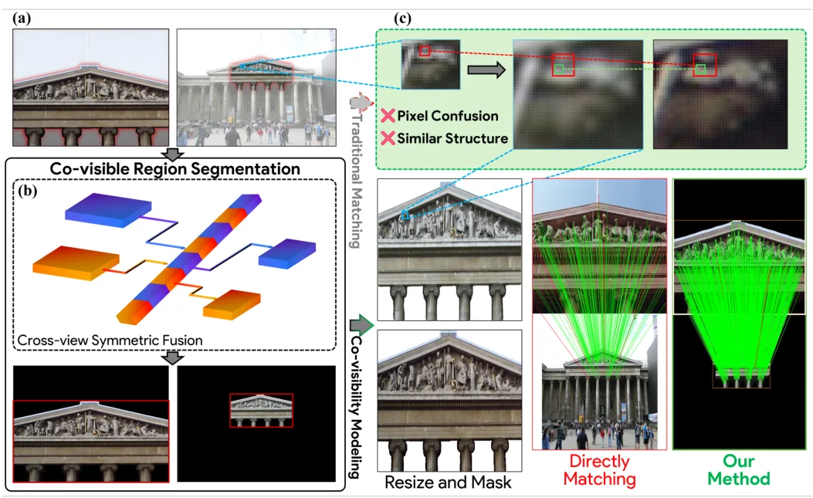

静态网页 · 2026-06-07
SLAM/GNSS/三维重建每日论文阅读
按评分、截图和中文摘要快速筛选当天候选；需要原文时可切换 English。
候选论文：2 推荐论文：2 新论文：2 仓库：39 新仓库：8
今日概览 今天新增论文 2 篇，均来自 cs.CV：一篇是面向自动驾驶实时部署的环视稠密三维几何模型 LiAuto-GeoX ，另一篇是将 Segment Anything 扩展到跨视图共可见区域建模的鲁棒特征匹配方法 SAMatcher 。已过滤历史重复论文 12 篇；按照任务规则，旧论文不作为“跟踪/更新”补进重点论文。
仓库侧新增 8 个项目，整体以低星新建仓库为主：COLMAP/3DGS 输入预处理、街景 Gaussian/COLMAP 流程、GNSS Android/RINEX 质量分析、立体 VIO 初始化和 ROS2 无人机地面站均值得后续打开 README 与代码结构核验。
新论文 · 日期 2026-06-04 · score 3 · cs.CV
作者：Jiawei Lian, Haoyi Sun, Yang Wu, Lifu Mu
评分 7.2/10
自动驾驶 稠密三维重建 LiDAR先验 几何蒸馏 多相机
一句话工作总结： 用 LiDAR 几何先验和蒸馏把大规模驾驶三维重建模型压缩成实时车载几何表示。
LiAuto-GeoX 面向自动驾驶实时稠密三维场景理解，先用大规模环视数据和稀疏 LiDAR 先验训练高容量 driving geometry model，再通过几何保持蒸馏压缩为 155M 参数车载模型。蒸馏包括 mask-guided depth-aware distillation 和 relative-pose relational distillation，以保留远距离几何、细粒度度量结构和跨视角一致性…
Dense 3D reconstruction has demonstrated immense potential for spatial understanding, yet its viability as a real-time, onboard representation for autonomous driving remains an open challenge. Existing large-s…

新论文 · 日期 2026-06-02 · score 3 · cs.CV
作者：Xu Pan, Qiyuan Ma, Mingyue Dong, He Chen
评分 7/10
特征匹配 共可见性 SAM SfM 视觉定位
一句话工作总结： 用 SAM 预测共可见区域作为先验，增强大视角变化下的图像特征匹配。
SAMatcher 将特征匹配建模为共可见区域预测问题，先基于 SAM 预测跨视图共可见 mask 和 bounding box，再将其作为结构化先验进行对应估计。方法引入对称 cross-view interaction 做双向特征交换和语义对齐，并通过 mask learning、box regression 和 mask-box consistency 统一监督，在大视角和尺度变化下提升匹配鲁棒性。
Reliable correspondence estimation is a fundamental problem in image processing, underpinning applications such as Structure from Motion, visual localization, and image registration. Existing learning-based me…
精选仓库/项目
默认显示 8 个精选；新仓库、高分仓库和 GNSS/GPS/RTK 相关仓库优先，可展开查看完整候选。
新项目 · Kotlin · ★ 0 · 更新 2026-06-06 · score 4
新项目 · Python · ★ 0 · 更新 2026-06-06 · score 4
新项目 · C# · ★ 0 · 更新 2026-06-06 · score 7
新项目 · C++ · ★ 0 · 更新 2026-06-06 · score 7
新项目 · Python · ★ 1 · 更新 2026-06-06 · score 4
toruhashimoto/unreflectanything-batch Batch specular-reflection / highlight removal (UnReflectAnything) for 3D Gaussian Splatting and photogrammetry input photos. CLI + Streamlit GUI, EXIF/format-preserving, with optional COLMAP and 3DGS (LichtFeld) A/B harnesses.
新项目 · Python · ★ 0 · 更新 2026-06-06 · score 3
Qiu0336/DSInit Code for the paper: Direct Sparse Initialization for Stereo Visual-Inertial Odometry
新项目 · ★ 6 · 更新 2026-06-06 · score 2
lluisestape-upc/drone-gcs Autonomous UAV ground control station — Electron + ROS2 + LiDAR SLAM + MAVLink · Raspberry Pi 5 onboard
新项目 · JavaScript · ★ 0 · 更新 2026-06-06 · score 2
还有 31 个候选仓库
HTML · ★ 816 · 更新 2026-06-06 · score 14
Topics：autoware-compatible, benchmarking, gnss, lidar, lidar-slam
3D-Vision-World/awesome-NeRF-and-3DGS-SLAM A comprehensive list of Implicit Representations, NeRF and 3D Gaussian Splatting papers relating to SLAM/Robotics domain, including papers, videos, codes, and related websites
★ 2028 · 更新 2026-06-01 · score 20
Topics：3dgs, awesome, gaussiansplatting, lidar-slam, nerf
kurajulii/slamAI-istanbulCanyon Enhance drone navigation with robust Visual Odometry and SLAM for urban canyons, focusing on realistic İstanbul environments and machine learning solutions.
Python · ★ 1 · 更新 2026-06-06 · score 11
Topics：airsim, computer-vision, drone, localization, mapping
colmap/colmap COLMAP - Structure-from-Motion and Multi-View Stereo
C++ · ★ 11862 · 更新 2026-06-05 · score 10
Topics：computer-vision, geometry, multi-view-stereo, reconstruction, structure-from-motion
Rust · ★ 2 · 更新 2026-06-06 · score 9
Topics：autonomous-driving, colmap, computer-vision, gnss, gps-denied
Kostya123123-cloud/GurionSLAM Simulate robot SLAM using concurrent Java microservices to fuse camera, LiDAR, and GPS data into a real-time global landmark map.
Java · ★ 0 · 更新 2026-06-06 · score 8
Topics：amazon-web-services, chatgpt, combinatorics, distributed-computing, embedded-systems
C++ · ★ 0 · 更新 2026-06-05 · score 5
★ 0 · 更新 2026-06-06 · score 4
Topics：bluetooth-low-energy, checkpoint-firewall, cisco-images, cisco-images-for-eve-ng, cisco-router-images
C++ · ★ 0 · 更新 2026-06-06 · score 4
C++ · ★ 17 · 更新 2026-06-03 · score 4
Topics：cpp, eskf, gnss, gnss-outage, inekf
bobvan/PePPAR-Fix Fixed-Position PPP-AR Disciplined Oscillator — carrier-phase GNSS for sub-nanosecond UTC alignment
HTML · ★ 3 · 更新 2026-06-06 · score 2
lorenzocl3940/gsd-2 Develop a coding agent that improves task automation by integrating directly with language models for efficient programming workflows.
★ 0 · 更新 2026-06-06 · score 2
Topics：aml, amlx, db2, db2-warehouse, fgo
xeeqr/speed-reader ⚡ Boost your reading speed with this web-based tool using RSVP and ORP, ensuring privacy with offline functionality and EPUB/TXT file support.
JavaScript · ★ 0 · 更新 2026-06-06 · score 2
Topics：blazor, brave-extension, cross-platform-speedreader, ebooks, gnss
CNU-Bot-Group/ru4dslam [CVPR Findings 2026] RU4D-SLAM: Reweighting Uncertainty in Gaussian Splatting SLAM for 4D Scene Reconstruction
Python · ★ 13 · 更新 2026-06-01 · score 9
Topics：4d-gaussian-splatting, 4d-reconstruction, computer-vision, cvpr2026, gaussian-splatting
Shell · ★ 4 · 更新 2026-06-06 · score 8
Rust · ★ 1 · 更新 2026-06-06 · score 8
MATLAB · ★ 0 · 更新 2026-06-06 · score 8
jcevasco2003/f_vigs_slam Este repositorio es para guardar la implementación de mi tesis de Licenciatura en Ciencias de Datos. Implementa un algoritmo de Gaussian Splatting aplicado a SLAM en el marco de ROS2.
C++ · ★ 1 · 更新 2026-06-01 · score 8
Delon123/solidstate-lidar-slam Adapt solid-state LiDAR for SLAM and benchmark performance in short-range, small-FoV, and degenerate scenarios robustly.
HTML · ★ 1 · 更新 2026-06-06 · score 7
Topics：buidler, camera-calibration, data-fusion, eth, gatsby-starter-kit
C++ · ★ 15 · 更新 2026-06-06 · score 6
Python · ★ 271 · 更新 2026-06-05 · score 6
Topics：deep-learning, gaussian-splatting, lio, slam, vio
quantroninblue/semantic_spacial_mapping Modular semantic spatial mapping framework integrating RGBD perception, semantic segmentation, visual odometry, world-frame geometry accumulation, and persistent spatial reasoning for robotics applications.
Python · ★ 0 · 更新 2026-06-06 · score 5
Python · ★ 23 · 更新 2026-06-03 · score 5
Topics：3dgs, 3dgs-slam, gaussian-splatting, slam
Shell · ★ 0 · 更新 2026-06-06 · score 4
rsasaki0109/gs-mapper Photos, robotics logs, and external SLAM outputs to browser-viewable 3D Gaussian Splats
Python · ★ 4 · 更新 2026-06-05 · score 4
Topics：3d-gaussian-splatting, 3d-reconstruction, 3dgs, 3dgs-slam, autonomous-driving
Python · ★ 72 · 更新 2026-06-06 · score 3
Topics：argoverse, autonomous-driving, dynamic-object-removal, kitti, lidar
JavaScript · ★ 0 · 更新 2026-06-06 · score 3
Python · ★ 11 · 更新 2026-06-05 · score 3
Topics：3d-reconstruction, factor-graph, gaussian-splatting, gtsam, isam2
cawkei/TTT3R Enhance 3D reconstruction with TTT3R, a test-time training method that boosts length generalization and improves performance for CUT3R applications.
Python · ★ 2 · 更新 2026-06-06 · score 2
Topics：3d-reconstruction, rnn-model, slam
nicoleravenous266/pyoctomapRT Accelerate 3D occupancy grid mapping with this Python wrapper for OctoMap-RT that uses GPU ray-tracing for real-time volumetric data processing.
★ 0 · 更新 2026-06-06 · score 2
Topics：3d-mapping, cuda, gpu, nanobind, nvidia-optix
aryanssargiyas-rgb/Axis Enhance your shell with a fast, local-first runtime that improves navigation, prompts, and command history without any setup.
★ 0 · 更新 2026-06-06 · score 2
Topics：alert, css, gtsam, illusion, lidar
静态站点 · 不依赖 npm/React/CDN · 每日自动生成